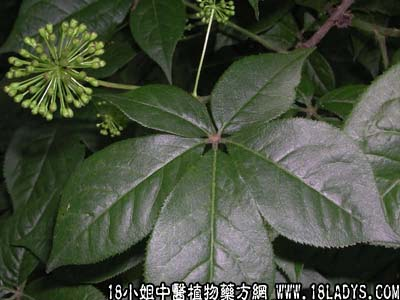

刺五加(中草药名称:五加参)(科目:五加科)

【中药概述】
刺五加为五加科植物刺五加的干燥根及根茎。辛、微苦，温。归脾、心经。
益气健脾，补肾安神：用于脾肾阳虚、体虚无力、食欲不振、风湿痹痛、腰膝酸痛、筋骨拘挛、失眠多梦等。可单方煎服，也可入剂，或浸酒服用。
【临证应用】
1.用治神经衰弱、失眠，食欲不振，冠心病，白细胞减少，风湿性关节炎，老年病，并可用于癌症辅助治疗；
2.治白细胞减少症，属气血虚弱型，疲倦乏力，头晕低热，面色无华，心悸气短，失眠。刺五加120g，研末制成片，每服6g，日3次。
【药理作用】
1.有人参样适应原样作用，可增强非特异性防御能力；
2.有降血糖、镇静、安神作用；
3.有抗氧化作用及抗衰老作用；
4.提高各器官系统的功能。其浸剂是一种有特效功能的滋补药。而又不过分刺激神经系统。
【化学成分】
含多糖甙、胡萝卜甙、丁香甙、异秦皮定甙、乙基米乳糖甙、丁香脂素二元葡萄糖甙等。
【用量用法】
10——15g，水煎服，或入丸散剂。
【使用注意】
阴虚火旺者慎服。